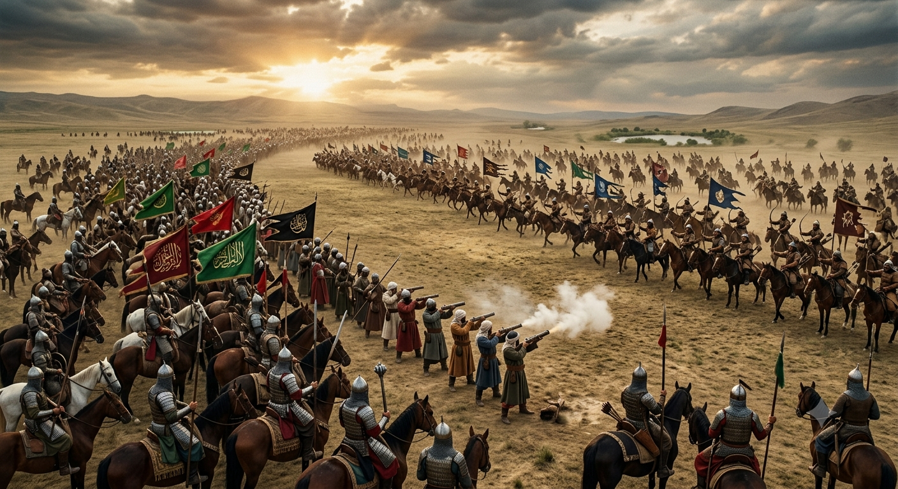
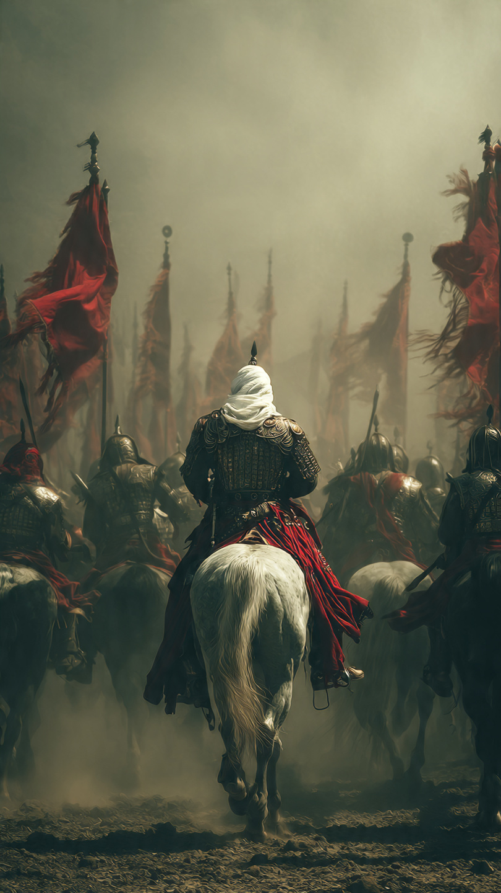

معركة شقحب.. كيف أوقف المسلمون المغول للمرة الأخيرة؟
في بداية القرن الثامن الهجري، كانت المنطقة الإسلامية تواجه خطرًا كبيرًا من المغول.
فبعد أن اجتاح المغول مناطق واسعة، أصبح الناس يخشون تقدمهم مرة أخرى.
كان المغول قوة عسكرية كبيرة، واشتهروا بسرعة تحركاتهم وشدة بأسهم.
وكان كثير من الناس يظنون أن إيقافهم أمر صعب.
في ذلك الوقت ظهر عالم وقائد له دور كبير في تشجيع المسلمين، وهو الإمام ابن تيمية، الذي حث الناس على الثبات والدفاع عن بلادهم.
واجتمع المسلمون لمواجهة جيش المغول في معركة عُرفت باسم معركة شقحب، قرب دمشق.
كان قائد المسلمين في هذه المعركة هو السلطان الناصر محمد بن قلاوون، ومعه عدد من القادة والعلماء والجنود.
لم تكن المعركة سهلة.
فالمغول كانوا معروفين بقوتهم وخبرتهم الطويلة في الحروب.
لكن المسلمين كانوا يعلمون أن عليهم الوقوف لحماية بلادهم وأهلهم.
تجمع الجيشان، وبدأت لحظات حاسمة ستحدد مستقبل المنطقة.
كان الجميع يعلم أن هذه المواجهة ليست مجرد معركة عادية...
بل كانت اختبارًا كبيرًا للصبر والثبات.
فهل يستطيع المسلمون إيقاف تقدم المغول؟
📷 الصورة رقم 1

بدأت معركة شقحب في ظروف صعبة، وكان الطرفان يستعدان لمواجهة قوية.
كان جيش المغول يملك خبرة كبيرة في القتال، وكان المسلمون يعلمون أن أي تراجع قد يسبب خطرًا كبيرًا على بلادهم.
وقف العلماء والقادة يشجعون الجنود على الثبات، ويذكرونهم بأهمية الدفاع عن أهلهم وأوطانهم.
كان الإمام ابن تيمية حاضرًا بين الناس، يحثهم على الصبر والثقة بالله.
بدأ القتال، واشتدت المواجهة بين الجيشين.
كانت المعركة تحتاج إلى شجاعة وتنظيم، وليس مجرد القوة فقط.
استطاع المسلمون أن يصمدوا أمام هجوم المغول، ولم يسمحوا لهم بتحقيق التقدم الذي كانوا يريدونه.
ومع استمرار القتال، بدأ يظهر أثر التنظيم والثبات في صفوف المسلمين.
كانت معنويات الجنود مهمة جدًا، فالجندي الذي يؤمن بهدفه يستطيع الصبر في أصعب الظروف.
وبمرور الوقت، تغيرت مجريات المعركة.
فقد وجد المغول أمامهم مقاومة قوية لم يتوقعوها.
أدركوا أن الوصول إلى دمشق لن يكون سهلًا كما ظنوا.
وبدأ الجيش المسلم يحقق تقدمًا مهمًا، حتى أصبحت نتيجة المعركة تميل لصالحه.
📷 الصورة رقم 2

انتهت معركة شقحب بانتصار المسلمين على جيش المغول، وكانت من المعارك المهمة في تاريخ المنطقة.
فقد أوقفت تقدم المغول نحو دمشق، وأعادت الثقة إلى الناس بعد فترة طويلة من الخوف.
لم يكن الانتصار بسبب عامل واحد فقط، بل بسبب اجتماع عدة أسباب:
التنظيم...
والصبر...
والقيادة...
والثبات في وقت الشدة.
أظهرت المعركة أن القوة الكبيرة لا تعني دائمًا النصر، فالإعداد الجيد والإرادة القوية قد تغير نتيجة المواجهات.
كما أظهرت أهمية دور العلماء والقادة في توجيه الناس وقت الأزمات، وتشجيعهم على الصبر والعمل.
وبقيت معركة شقحب في الذاكرة التاريخية باعتبارها واحدة من آخر المواجهات الكبرى التي أوقف فيها المسلمون تقدم المغول في بلاد الشام.
تعلمنا هذه القصة أن الأوقات الصعبة تحتاج إلى تعاون الجميع، وأن الثبات وقت الخوف قد يكون سببًا في تجاوز أكبر التحديات.
فالتاريخ لا يصنعه الأقوياء فقط...
بل يصنعه أيضًا من يملكون العزيمة والصبر والإصرار.
⚔️📖 انتهت القصة 📖⚔️
العبرة:
عندما يجتمع الإيمان والصبر والتخطيط، يستطيع الإنسان مواجهة أصعب الظروف.